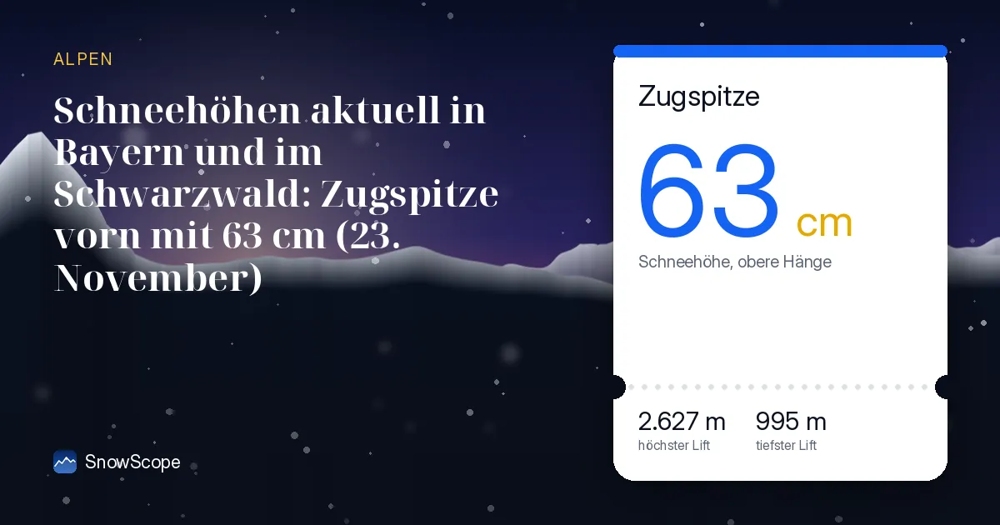
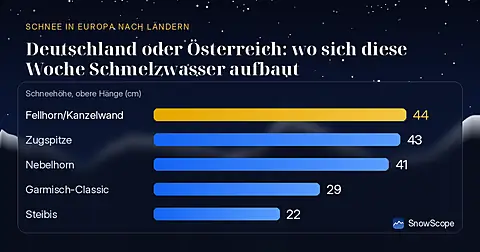
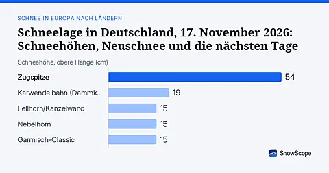

Schneehöhen aktuell in Bayern und im Schwarzwald: Zugspitze vorn mit 63 cm (23. November)
9 von 9 beobachteten Skigebieten in Bayern und im Schwarzwald haben am Montag, 23. November oben Schnee; Zugspitze liegt mit 63 cm vorn.
Die Live-Schneeprognose für Zugspitze in der SnowScope-AppSchneehöhen, Pulverschnee-Alarme und 3D-Karte, gratis.
Schnee im oberen Bereich
Über alle 9 Gebiete dieser Liste liegt der mittlere Wert bei 35 cm im oberen Bereich.
Der Rest der Top fünf: Fellhorn/Kanzelwand (41 cm), Oberstdorf (39 cm), Garmisch-Classic (37 cm) und Nebelhorn (35 cm).
| Skigebiet | Schneehöhe | Neuschnee, 72 h | Erwartet, nächste Tage | Gipfel |
|---|---|---|---|---|
| Zugspitze | 63 cm | 33 cm | 17 cm | 2.627 m |
| Fellhorn/Kanzelwand | 41 cm | 33 cm | 13 cm | 1.965 m |
| Oberstdorf | 39 cm | 32 cm | 13 cm | 2.213 m |
| Garmisch-Classic | 37 cm | 24 cm | 13 cm | 2.047 m |
| Nebelhorn | 35 cm | 34 cm | 14 cm | 2.213 m |
| Feldberg | 18 cm | 25 cm | 7 cm | 1.446 m |

Gebiet für Gebiet
Zugspitze hat oben 63 cm; die Lifte reichen bis 2.627 m. Neuschnee: 33 cm in drei Tagen, Vorhersage 17 cm bis 26. November.
Fellhorn/Kanzelwand hat oben 41 cm; die Lifte reichen bis 1.965 m. Neuschnee: 33 cm in drei Tagen, Vorhersage 13 cm bis 26. November.
Oberstdorf: 39 cm im oberen Bereich (höchster Lift 2.213 m), 32 cm Neuschnee in 72 Stunden, bis 26. November weitere 13 cm.
Garmisch-Classic hat oben 37 cm; die Lifte reichen bis 2.047 m. Neuschnee: 24 cm in drei Tagen, Vorhersage 13 cm bis 26. November.
Was in drei Tagen gefallen ist
Am meisten Neuschnee in 72 Stunden: Nebelhorn 34 cm, Zugspitze 33 cm und Fellhorn/Kanzelwand 33 cm.
Die nächsten drei Tage
Bis 26. November sagt die Vorhersage Zugspitze 17 cm, Nebelhorn 14 cm und Oberstdorf 13 cm.
Tipp für einen Kurztrip
Am meisten Schnee fürs Geld bei zwei Skitagen: Zugspitze, mit 63 cm jetzt und 17 cm mehr bis 26. November.
Am Samstagmorgen Grenzverkehr und Passstraßen prüfen: eine Stunde früher losfahren spart oft zwei.
Freeride und Skitouren
Nach 34 cm Neuschnee ist oben Pulver möglich. Touren und Freeride nur mit gelesenem Lawinenlagebericht, LVS-Gerät, Schaufel und Sonde.
Neuschnee auf kalter Unterlage bedeutet die besten Pistenverhältnisse der Woche, auch die steilen Hänge fahren sich wieder gut.
Tipps für Skifahrer
- Winterreifen oder Ketten für die letzten Kilometer zu den hohen Gebieten.
- Frühsaison: Ski wachsen, der Schnee ist oft stumpf.
- Abseits der Piste nur nach dem Lawinenlagebericht.
Zu diesen Zahlen
Die Schneehöhen der Skigebiete sind der meiste Schnee in den oberen Hängen am angegebenen Tag; es sind Schätzungen für eine Fläche, keine Messung an einem Punkt. Prognosen können sich ändern. Lies vor dem Freeriden immer den offiziellen Lawinenlagebericht.
Diesen Bericht zitieren
Für Forschung, Lehre oder Presse: Zahlen und Grafiken sind unter CC BY 4.0 mit dieser Quellenangabe frei nutzbar.
SnowScope (2026), Schneehöhen aktuell in Bayern und im Schwarzwald: Zugspitze vorn mit 63 cm (23. November), https://snowscope.app/blog/de/2026/11/schneehoehen-bayern-schwarzwald-23-november-2026.html, abgerufen am 2026-11-23
SnowScope (Atlas Labs). (2026, November 23). Schneehöhen aktuell in Bayern und im Schwarzwald: Zugspitze vorn mit 63 cm (23. November). SnowScope snow reports. https://snowscope.app/blog/de/2026/11/schneehoehen-bayern-schwarzwald-23-november-2026.html
BibTeX
@misc{snowscope2026schneehoehenbayernschwar,
author = {{SnowScope (Atlas Labs)}},
title = {Schneehöhen aktuell in Bayern und im Schwarzwald: Zugspitze vorn mit 63 cm (23. November)},
year = {2026},
month = nov,
howpublished = {\url{https://snowscope.app/blog/de/2026/11/schneehoehen-bayern-schwarzwald-23-november-2026.html}},
note = {Published 2026-11-23 13:18 UTC; accessed 2026-11-23}
}· CC BY 4.0 · Methoden, Daten und Werkzeuge →
Zugspitze: Schnee und Temperatur nach Höhe, dieser Winter vs letzter (Werkzeuge) →
Zugspitze folgen
Gratis: eine Nachricht, wenn Neuschnee kommt, und jeden Morgen die Vorhersage.
Weitere Schneeberichte

Deutschland hat am 20. November 1.790 km² Schneebedeckung, Österreich führt mit 44 Prozent Weiß. Die Allgäuer Alpen erhielten in 72 Stunden 34 cm.

Zugspitze führt deutsche Skigebiete mit 53 cm am 19. November an. Die Schneedecke wächst; in der nächsten Woche sind 38 cm möglich.

Der Schnee schrumpft in Deutschland: 840 km² weniger als vor einer Woche